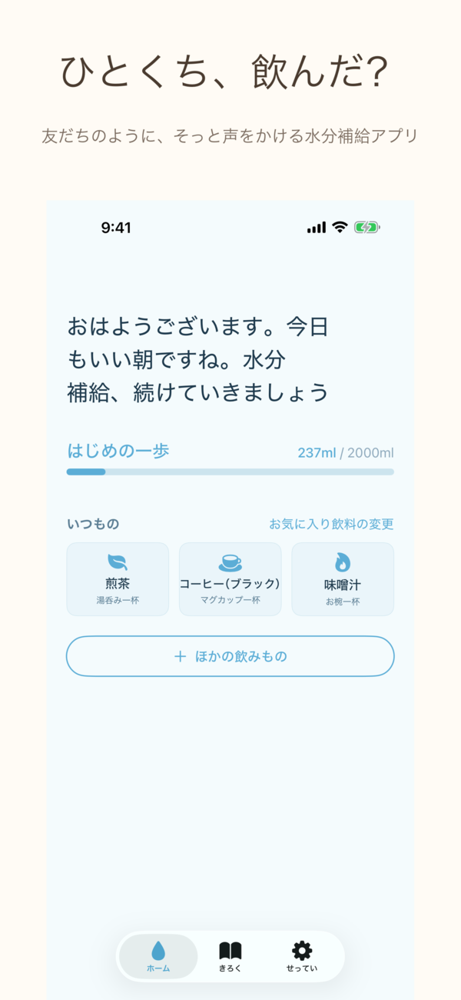
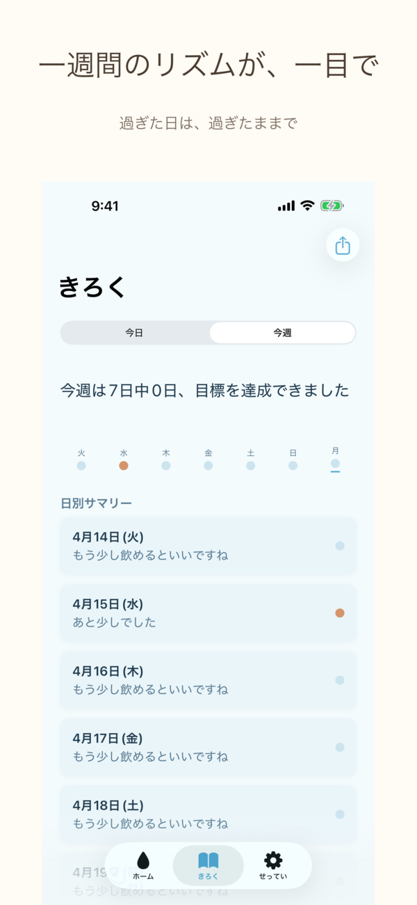
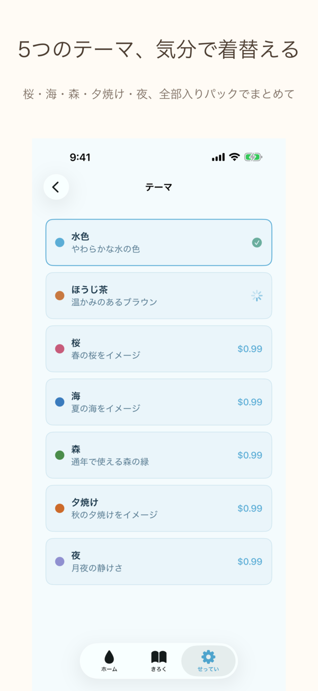

祖母が、夏の午後に体調を崩しました。
「お茶は飲んでる」と、たしかにそう言っていて、本当に飲んでいた。
ただ、思っていたより、量が少しだけ足りていなかったのです。
叱るでも、責めるでもなく、
ただそっと、そばで問いかけたかった。
「ひとくち、飲んだ？」
それだけで、ちがう夏になる。
そう思って、この道具をつくりました。
家族の夏を、ちゃんと守りたい。
自分のからだも、ほんとうは大切にしたい。
でも忙しい日々のなかで、つい声をかけそびれる。
「あとで聞こう」と思って、そのまま夕方になる。
その「うっかり」を、そっと支えたくて、
この小さなアプリをつくりました。
祖母が、夏の午後に体調を崩しました。
「お茶は飲んでる」と、たしかにそう言っていて、本当に飲んでいた。
ただ、思っていたより、量が少しだけ足りていなかったのです。
叱るでも、責めるでもなく、
ただそっと、そばで問いかけたかった。
「ひとくち、飲んだ？」
それだけで、ちがう夏になる。
そう思って、この道具をつくりました。
「健康のため水を飲もう」推進運動のなかで、厚生労働省はおとなの水分摂取の目安を 一日およそ1.2リットル と示しています。お茶や汁物でも水分は補えますが、量の感覚は、思っているより、人によってぶれます。
出典: 厚生労働省「健康のため水を飲もう」推進運動
朝のお茶、昼の味噌汁、夕方の麦茶。
飲んではいます。たしかに。
でも「一日にどのくらい?」と聞かれると、
たいていの人は、うまく答えられません。
責めるための問いではありません。
ただ、ひとくち、意識するだけで、夏は、ずいぶんちがう。
医療機器でも、ダイエット器具でもありません。
朝と夕に一度だけ、やさしく問いかける道具です。
朝と夕に、たった一度ずつ。「ひとくち、飲んだ?」とだけ、そっと問いかけます。
お茶も、味噌汁も、麦茶も。日本のくらしにある飲み物を、あなたのペースで見える形に。
同じ買い物で、家族にも届く。離れていても、同じ問いを、同じ時間に。
実際のアプリ画面です。広告はなく、ひと呼吸分の静けさがあります。

お気に入りの飲みものをワンタップ。今日の進捗が、そっと積みあがっていきます。

日々のひとくちが、やさしいグラフに。責めずに、ただ流れを見せてくれます。

水色のほか、ほうじ茶・桜・海・森・夕焼け・夜。その日の気分で、静かに切り替え。
朝、アプリを開く。今日の問いかけが、そっと待っています。
飲んだものをひとつ、えらぶ。お茶・麦茶・味噌汁、ぜんぶ、そのまま。
夕方にもう一度だけ、そっと問いかけます。一日を、静かに終えるために。
それだけ。設定も、登録も、ほぼ要りません。
静かに、正直に、そばにいることを選びました。
はい、数えられます。水やお茶、麦茶、味噌汁など、日本のくらしのなかの飲み物を、そのままあなたのペースで見える形にします。アルコールは、利尿作用があるため対象にしていません。
厚生労働省の示すおとなの一日の水分摂取目安 約1.2L を参考に、初期設定はおだやかに置いています。体格や生活環境はひとそれぞれなので、あくまで一つの目安として受けとめてください。
使えます。通信がなくても、朝と夕の問いかけはそのままはたらきます。データはあなたのiPhoneのなかにだけ保存されます。
一日に二度だけです。朝と夕に一度ずつ、そっと問いかけます。時間はあなた好みに調整できます。うるさく感じたら、いつでもオフにできます。
出ません。個人の記録はすべてあなたのiPhoneのなかだけに保存されます。わたしたちは集めません。広告のための情報も使いません。
いいえ。ひとくちは医療機器ではありません。病気の予防・診断・治療を目的とするものではなく、水分摂取のふり返りを支えるための、くらしの道具です。体調に不安があるときは、必ず医師や薬剤師にご相談ください。
いいえ、見えません。家族共有(Family Sharing)はあくまでAppleの仕組みで、同じ買い物をグループの最大6名まで共有できる、というものです。それぞれの記録はそれぞれの端末のなかに留まり、相互には共有されません。同じ問いかけを、同じ時間に、それぞれが自分のペースで受けとる。そういう設計にしてあります。
その小さなひとこえが、家族と自分の、やさしい夏になる。